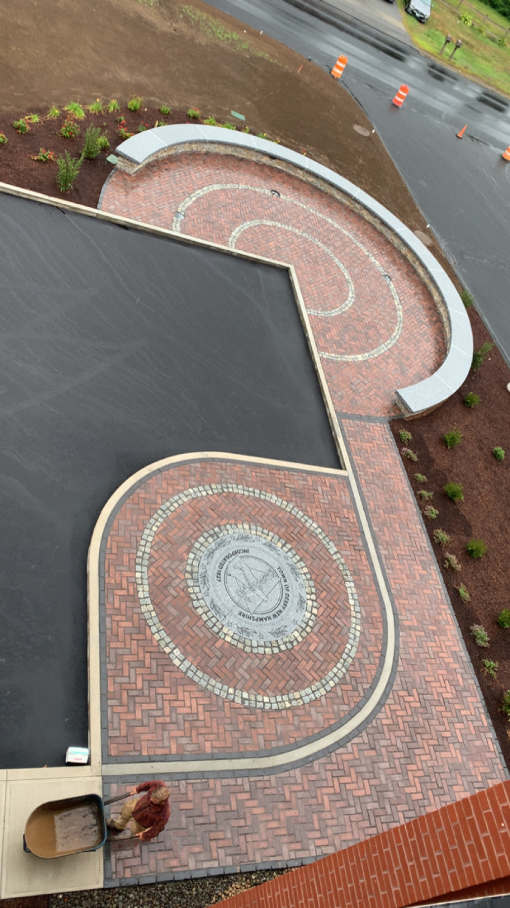

Resume
Some examples of experiences I had that have improved upon my understanding of the topic or made me more interested in the topic include, a lot different designs and layouts for bricks and pavers which made me want to do more in that field.
Working on Excel and Access I had a very basic understanding of how to use these systems, my information and technology class deepen my understanding of how to manipulate raw data and numbers into ways that can help grow a companies profits or cut down on expenses.
I had little to no experience with HTML but after learning the basics I was able to expand my knowledge on my own by experimenting with codes and different styles.

(This Photo shows some of the work I did over the summer working for a masonry company, this is the new Derry fire department)
Skills
- Communication and teamwork
- Hard working and consistent
- Basic web development (HTML/CSS)
- Excel/spreadsheet analysis
Experience
| Role | Organization | Highlights |
|---|---|---|
| Landscaper/Masonry | Company/local business (Greeleys Landscaping) | done over 50 plantings and patios(residential & commercial) |
| Group Work | Courses/ Clubs | Built a team culture from scratch, collaborated and learned from team members, found ways to tailor to each members working style. |
| Current College Student | University of New Hampshire & Plymouth State University | Studying Marketing as a Junior, Learned many basic skills with financing, spreadsheets, AI manipulation, public speaking, collaborative group work projects, and many more basic but necessary skills. |
Video
Here is a embedded video.